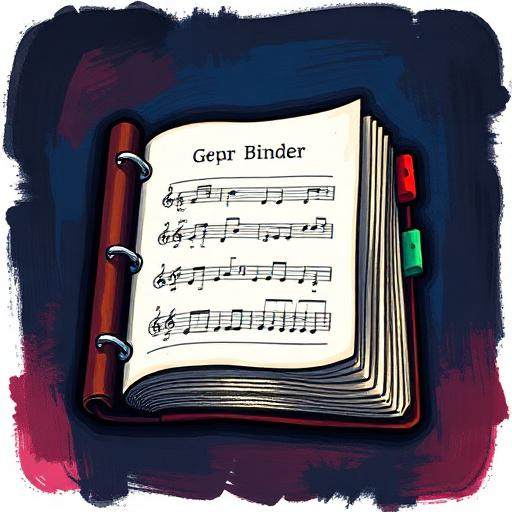

Songs and ownership
Covers, Rights & Royalties
RockMundo treats a song as a long-lived creative asset. You can perform material, add songs to a repertoire, collaborate on writing and make recordings, but each step has different implications for authorship, permissions and who receives future income.
In brief
Adding another artist's song to your live repertoire is not the same as owning it. Recording a cover can require permission, while original and co-written songs retain writer ownership and agreed splits. Royalties follow those rights when recordings and releases generate eligible income.
Three layers to keep separate
The song
The underlying composition and its writers. This is where authorship and writing splits begin.
The repertoire
The material a character or band knows and can prepare for live performance.
The recording
A specific recorded version that can become part of a release, stream, sale and royalty history.
The release
The commercial package that makes one or more recordings available to audiences.
Playing cover songs live
Bands can discover other artists' songs and bring appropriate material into their repertoire. That lets you prepare and perform a cover without pretending your band wrote the underlying composition.
Familiarity and rehearsal still matter. Adding a song to a repertoire is the beginning of preparation, not an automatic stage-ready state.

Recording a cover
Recording someone else's composition is a more significant rights action than performing it live. Where the game requires permission, the band or artist must request and receive that permission before making the recording.
- Find the song. Identify the composition you want to cover.
- Add and prepare it. Build familiarity and rehearse it as you would any important material.
- Request recording permission where required. The rights holder decides whether the cover can proceed.
- Book the recording. Once authorised, the normal studio and performer rules apply.
- Release the cover. The finished recording participates in the normal streaming, sales and chart systems while preserving the song's rights history.
Co-writing and splits
Collaborative songwriting records multiple creators rather than assigning the whole song to whichever player pressed the final button. When the songwriting flow presents ownership or split choices, treat them as a lasting part of the song's future economics.
Where royalties fit
Royalties are the bridge between rights and commercial activity. Streams, sales and other eligible uses can generate income that is then allocated according to the relevant ownership and recording relationships.
Do not assume that every dollar attached to a release belongs entirely to the performing band. Writers, collaborators and other entitled parties can have legitimate shares.
Good rights hygiene
- Check the recorded writers and splits before planning a release.
- Do not confuse band membership with song ownership.
- Request cover recording permission early enough that a refusal does not destroy a release schedule.
- Keep collaboration agreements clear when multiple players contribute.
- Review royalty and finance history rather than estimating what should have been paid from memory.